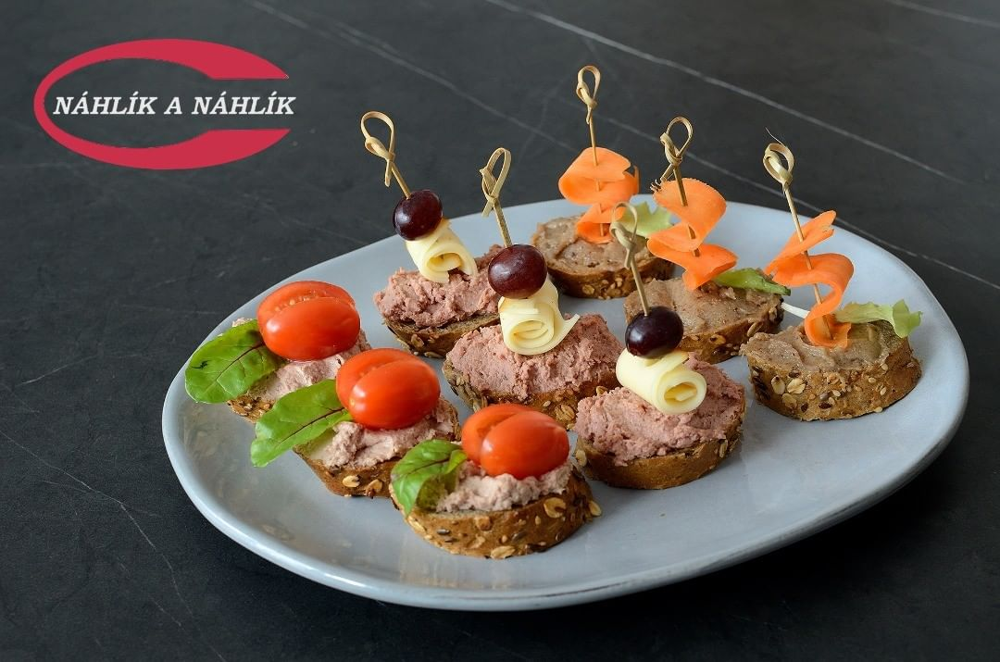

Guláše podľa @nahlikanahlik — Normy Jedál
Pochutnejte si na jednohubkách, které Vás budou bavit a které jsou díky našim paštikám/pomazánkám především rychlé a jednoduché na přípravu! Přejeme krásný začátek týdne!
Použili jsme (zleva): Kněždubská paštika, Zlatá telecí paštika, Bůčková pomazánka
Objednávejte zde 👉 www.nahlikovi.cz
#jidlo #food #polevky #pastiky #hotovky #masovespeciality #nahlikanahlik #gulase #tradice #chut